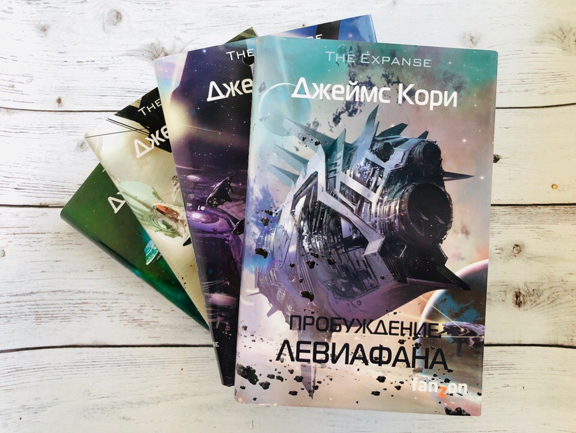

Серия книг «Пространство» Джеймса Кори – космическая сага о недалёком будущем человечества, вовсю осваивающего Солнечную систему. Однажды в постоянно тлеющее противостояние трёх главных человеческих сил вклинивается внеземная угроза.
За именем Джеймса Кори скрывается дуэт писателей-фантастов Дэниела Абрахама и Тая Фрэнка. Оба автора не особо знакомы русскоязычному читателю. Творчество Абрахама частично переведено на русский, в том числе созданный с его сценарием графический роман по «Игре престолов». Фрэнк до сотрудничества со своим соавтором работал над новеллизациями «Звёздных войн». Слава настигла творческий тандем в 2011 году, после выхода их первого совместного романа «Пробуждение Левиафана». В 2020-м ещё не завершённая серия книг «Пространство» (или «Экспансия») удостоилась премии «Хьюго» в номинации «Цикл книг».
В своих научно-фантастических романах Джеймс Кори показывает относительно недалёкое будущее. Примерно в 2100-х годах люди заселят Марс, Луну и пояс астероидов. Землёй управляет ООН, а давно независимый от неё Марс наращивает собственную боевую мощь. Астероидные жители – астеры, или внешние, – постоянно находятся в шатком положении из-за зависимости от землян и марсиан – планетян, или внутренних. Союз внешних планет (СВП), признанный Землёй и Марсом террористическим объединением, призывает астеров сплотиться против диктата планетных правительств.
В каждой книге «Пространства» есть свои главные герои, однако все они так или иначе связаны с командой независимого боевого корабля «Росинанта». Те, в свою очередь, сталкиваются с кое-чем необъяснимым: с вероятно разумной формой жизни, имеющей внеземное происхождение, которую называют протомолекулой.
| Капитан | Инженер | Механик | Пилот |
|---|---|---|---|
| Джеймс Холден | Наоми Нагата | Эймос Бартон | Алекс Камаль |
| Землянин с темным и таинственным прошлым, которого угораздило попасть в самую кашу заваривающегося конфликта. | Помощница капитана, астероидянка. Бывалая, опытная в своём деле и прагматичная. | Марсианин, любитель путешествий и приключений и нелюбитель войны. | Землянин. Помимо своей основной профессии он достаточно серьёзный боец. |
По мотивам серии книг Джеймса Кори в 2015 году вышел первый сезон сериала «Экспансия». Судьба экранизации была весьма непростой. Изначально ею занимался стриминг Syfy, который после третьего сезона решил её прикрыть. Фанаты негодовали из-за закрытия шоу, что привлекло внимание Amazon Prime Video. В итоге сериал завершился на 6-м сезоне в 2022 году. Смотреть его можно, не боясь проспойлерить себе концовку цикла. На экране раскрыли от силы половину сюжета всего «Пространства».